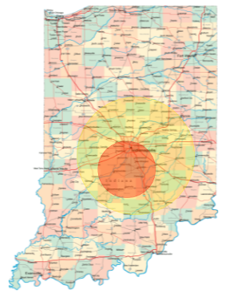

The radar feature shows you which parts of Indiana are under a tornado watch or warning
The Yellow Area is under a tornado watch
The Red Area has a tornado warning and a tornado was been spotted
You will get an alert on your device if these are in your current location
